Кухня, гриль и бар
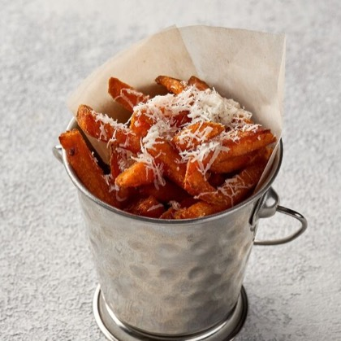
Батат фри с трюфельным соусом
380 ₽Хрустящие ломтики батата, обжаренные до золотистой корочки, дополнены нежным трюфельным соусом. Сверху блюдо посыпано пармезаном, который придаёт ему насыщенный вкус
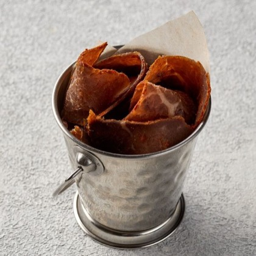
Ломтики вяленой говядины в пряных специях
650 ₽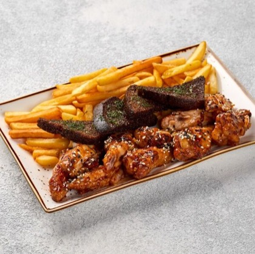
Пивная тарелка
890 ₽Пивная тарелка из куриных крыльев, обжаренных в соусе сладкий чили, с хрустящим картофелем фри и ароматными чесночными гренками
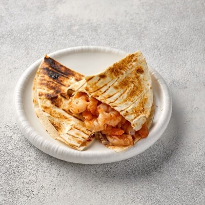
Пита с креветками
520 ₽Хрустящая тортилья с начинкой из томатного соуса в сочетании с хрустящими солеными огурцами, ароматными креветками и нежным сыром моцарелла. Подается с острым соусом спайси
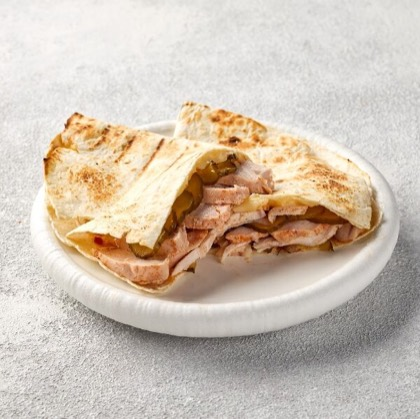
Пита с куриным бедром
420 ₽Хрустящая тортилья с начинкой из томатного соуса в сочетании с хрустящими солеными огурцами, ароматным куриным бедром и нежным сыром моцарелла. Подается с острым соусом спайси
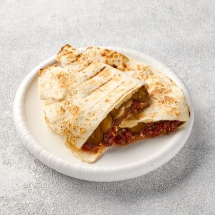
Пита с овощами
360 ₽Хрустящая тортилья с начинкой из томатного соуса в сочетании с хрустящими солеными огурцами и нежным сыром моцарелла. Подается с острым соусом спайси
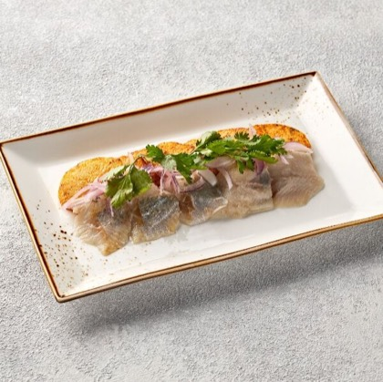
Сельдь слабосолёная с картофелем
350 ₽Ароматная слабосолёная сельдь с теплым картофелем, красным луком и укропом
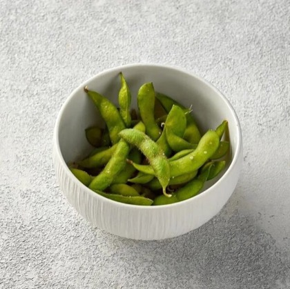
Стручки Эдамаме с солью
350 ₽Нежные стручки эдамаме с растительным маслом и чесноком, создают гармоничное сочетание вкусов. Блюдо обладает лёгким сливочным оттенком и пикантной ноткой
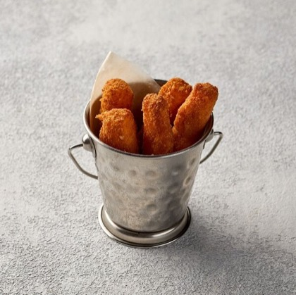
Сыр сулугуни в панировке
350 ₽Сырные палочки в панировке, обжаренные до хруста, с тянущимся сулугуни внутри
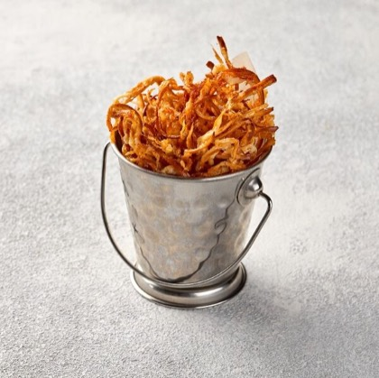
Сыр чечил жареный
250 ₽Хрустящий сыр чечил в пикантной паприке
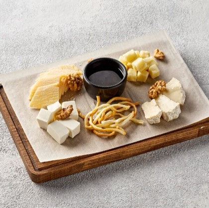
Сырная тарелка
650 ₽Сырная тарелка — это изысканное сочетание различных видов сыра: чечил, камамбер, пармезан и брынза. Подаётся с медом и грецкими орехами, что добавляет сладкий вкус
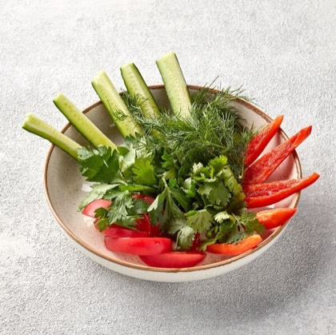
Тарелка свежих овощей
360 ₽Свежие, хрустящие и полезные овощи. В составе данной закуски: болгарский сладкий перец, свежий огурец, ароматные помидоры, укроп, петрушка, кинза
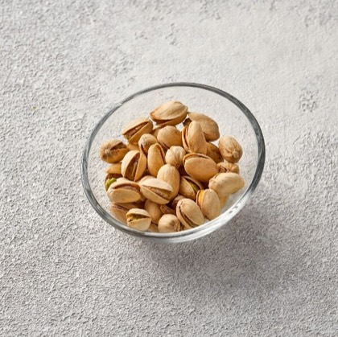
Фисташки
600 ₽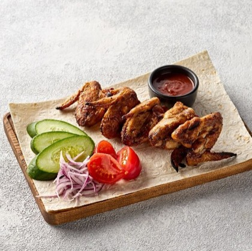
Крылья куриные
550 ₽Шашлык из куриных крыльев — это вкусное и сочное блюдо, приготовленное из маринованных куриных крылышек, обжаренных до золотистой корочки на углях. Подаётся с красным крымским луком, а также с томатным соусом
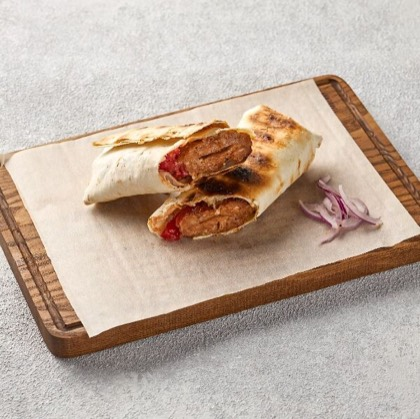
Люля из свиной шеи в лаваше
590 ₽Сочно обжаренный кебаб из свиной шеи на мангале, завернутый в лаваш со свежими помидорами и соусом. Подаётся с красным луком.
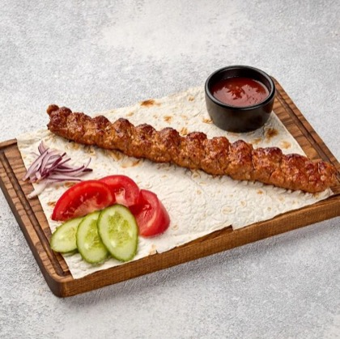
Люля из свиной шейки
490 ₽Люля из свиной шейки — это сочный и ароматный кебаб, приготовленный из фарша из свиной шейки. Мясо обладает нежной текстурой и насыщенным вкусом. Подаётся с красным крымским луком, а также с томатным соусом
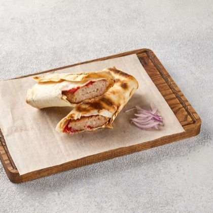
Люля из цыплёнка в армянском лаваше
550 ₽Сочно обжаренный кебаб из цыплёнка на мангале, завернутый в лаваш со свежими помидорами и соусом. Подаётся с красным луком.
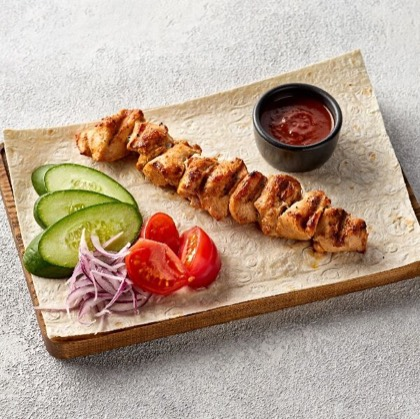
Шашлык из куриного филе
690 ₽Куриное филе, маринованное в специях и травах, обжаривается на углях до золотистой корочки, сохраняя внутри все соки и нежность. Подаётся шашлык с ярким красным крымским луком, а также с насыщенным томатным соусом
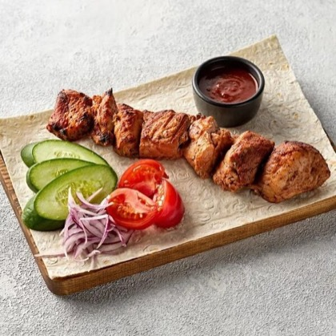
Шашлык из свиной шейки
690 ₽Свинина, маринованная в специях и травах, обжаривается на углях до золотистой корочки, сохраняя внутри все соки и нежность. Подаётся шашлык с ярким красным крымским луком, а также с насыщенным томатным соусом
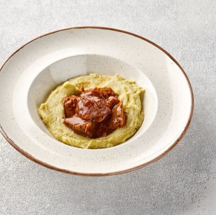
Говяжьи щёчки с пюре
690 ₽Говяжьи щёчки очень мягкие и ароматные благодаря длительному тушению. Подаём с нежным картофельным пюре
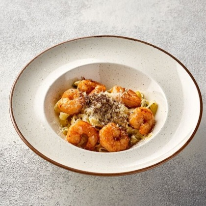
Паста с креветками
690 ₽Нежная паста фетучини с ароматными креветками в сливочном соусе с пармезаном
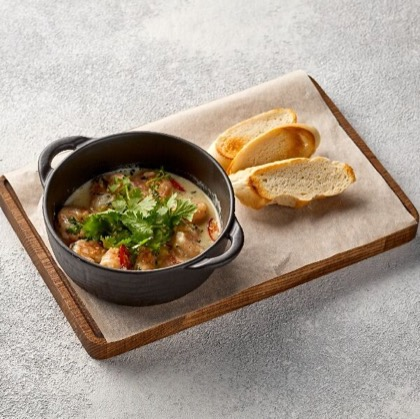
Креветки в сливочном соусе
790 ₽Ароматные креветки в нежном сливочном соусе под пармезаном с хрустящей чиабаттой, обжаренной на гриле
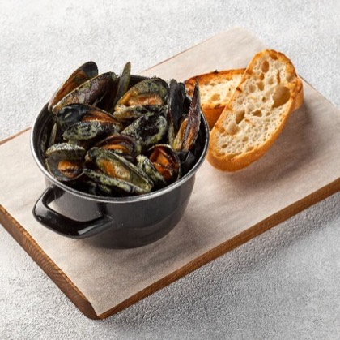
Мидии с сыром горгонзола
1 080 ₽Мидии, томленные в сливочном соусе с пряным сыром горгонзола и соусом песто. Подается с хрустящей чиабаттой
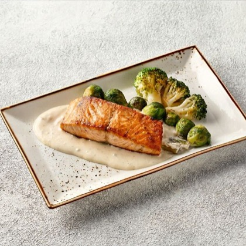
Нежный стейк лосося на гриле
1 350 ₽Нежный стейк из лосося на гриле с ароматными овощами на гарнир под нежным сливочным соусом
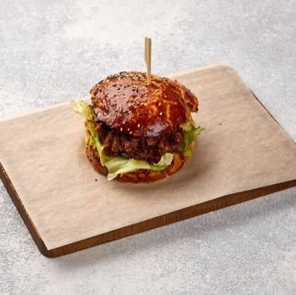
Фирменный бургер с нежными говяжьими щёчками
890 ₽Бургер с говяжьими щёчками — нежные говяжьи щёчки, микс салата, солёные огурцы, сыр чеддр и перечный соус на мягкой булочке. Попробуйте и оцените сочетание ингредиентов!
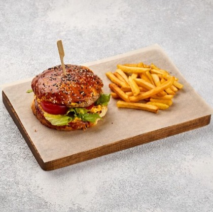
Чизбургер с цыпленком и картофелем фри
590 ₽Чизбургер с цыплёнком и картофелем фри — сочная котлета из цыплёнка, микс салата, томаты, солёные огурцы и сырный соус на мягкой булочке, а в дополнение — хрустящий картофель фри. Попробуйте и оцените сочетание ингредиентов!
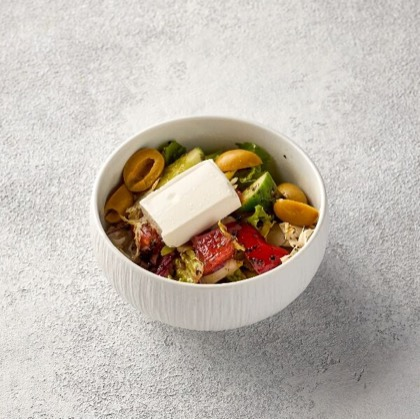
Греческий салат
580 ₽Лёгкий и сытный салат из нарезанных свежих помидоров, огурцов, сладкого болгарского перца, красного крымского лука, оливок и маслин, а также сыра. Салат заправляем соусом песто собственного приготовления
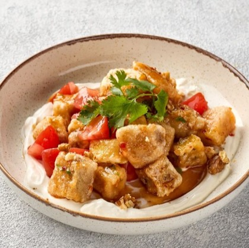
Салат из хрустящих баклажанов
450 ₽Салат, в котором свежие спелые томаты сочетаются с обжаренными до золотистой корочки баклажанами. Баклажаны придают салату хрустящую текстуру и насыщенный вкус, а свежие томаты добавляют сочность и легкость. Украшаем рубленой зеленью и дробленым грец…
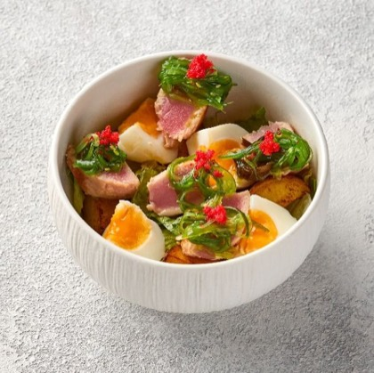
Салат с тунцом в ореховом соусе
750 ₽Легкий салат с нежным обжаренным тунцом, в сочетании с хрустящим картофелем, миксом салата, отварным яйцом под ореховым соусом и водорослями чука
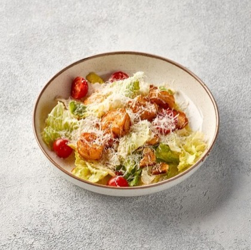
Цезарь с креветками
680 ₽Классический салат, который сочетает в себе ароматные креветки, обжаренные на гриле, хрустящие листья салата Романо и ароматные гренки. Подаём с черри и пармезаном. Заправляем фирменным соусом
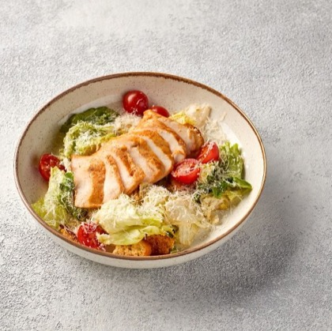
Цезарь с курицей
540 ₽Классический салат, который сочетает в себе нежные кусочки куриного филе, хрустящие листья салата романо и айсберг, а также ароматные гренки. Подаём с черри и пармезаном. Заправляем фирменным соусом
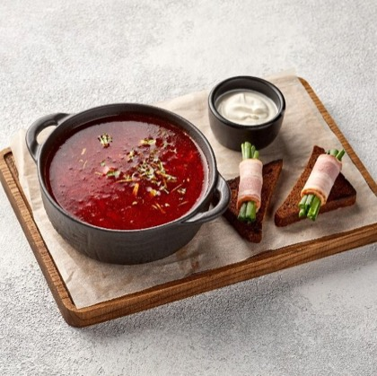
Борщ с говяжьими щёчками
550 ₽Наваристый и ароматный суп, приготовленный по традиционному домашнему рецепту. Основу блюда составляют нежные говяжьи щечки, которые долго тушатся до мягкости, придавая борщу насыщенный вкус. Борщ подаём со сметаной, зелёным луком, бородинским хлебом
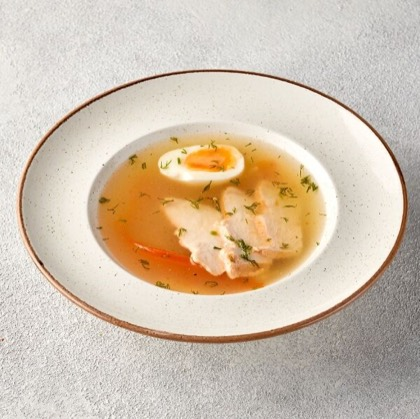
Куриный суп
400 ₽Насладитесь классическим вкусом нашего супа — нежное куриное филе, ароматная морковь и яичная лапша в насыщенном курином бульоне создают гармоничное сочетание. Петрушка и чёрный перец добавляют блюду пикантности и яркости
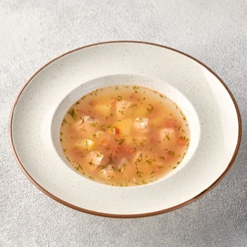
Наваристая уха
470 ₽Насыщенный рыбный суп, приготовленный из свежего лосося и фермерских овощей. Украшаем рубленой ароматной зеленью
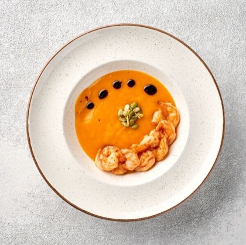
Тыквенный крем-суп с креветкой
480 ₽Изысканное блюдо, объединяющее в себе нежный вкус тыквы и морепродуктов. Суп обладает бархатистой текстурой благодаря сливкам и мускатному ореху. Украшаем суп бальзамическим соусом
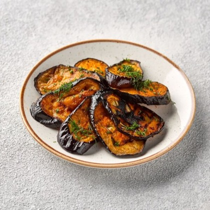
Баклажаны на гриле
240 ₽Нежный баклажан в золотистой корочке с ароматом дымка. Подаётся с рубленой петрушкой
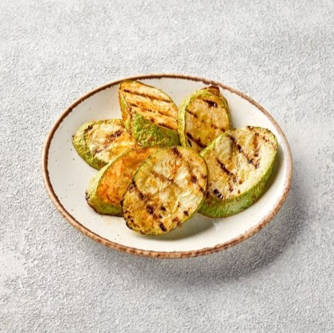
Кабачки на гриле
250 ₽Сочный и нежный кабачок в золотистой корочке с ароматом дымка. Сверху украшен рубленой петрушкой
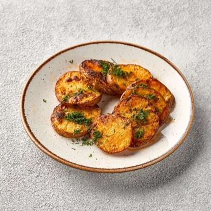
Картофель на гриле
250 ₽Ароматный картофель обжаренный на гриле
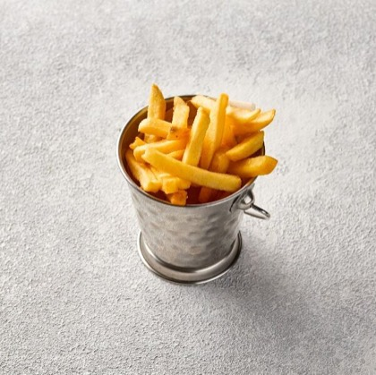
Картофель фри
250 ₽Картофель фри с золотистой хрустящей корочкой. Советуем заказать соус к картофелю
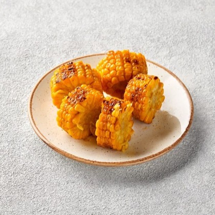
Кукуруза, обожжённая на гриле
250 ₽Кукуруза, приготовленная на открытом огне, идеально подходит как гарнир к мясным блюдам, а также может быть самостоятельным угощением
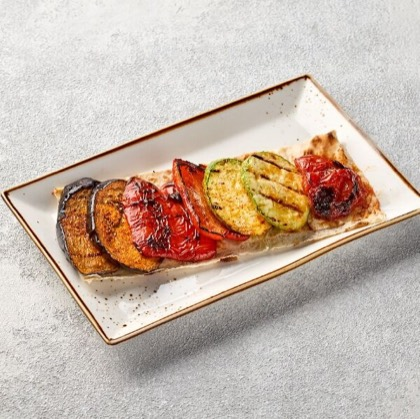
Овощи на гриле
350 ₽Сочные и хрустящие овощи, приготовленные на берёзовых углях. Подаём на тонком лаваше
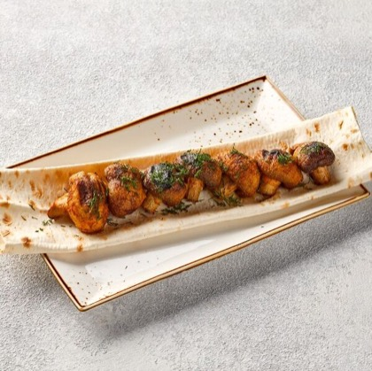
Шампиньоны на гриле
290 ₽Свежие шампиньоны обжариваем на гриле до готовности. Подаём с тонким кусочком лаваша

Перечный соус
100 ₽Перечный соус - это абсолютная классика, он гармонично дополняет мясной вкус и придает блюду особенный аромат. Готовится на основе перца
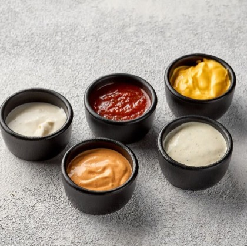
Спайси соус
100 ₽Этот соус — идеальное сочетание пряностей и пикантности, которое добавит яркий акцент к любому блюду

Сырный соус
100 ₽Кремовый и насыщенный сырный соус идеально подойдёт для множества закусок и блюд

Томатный соус
100 ₽Классический и популярный томатный соус. Готовим на основе томатной пасты, добавляем яркие приправы и соль. Отлично дополнит и преобразит блюдо на вашем столе

Чесночный соус
100 ₽Яркий и ароматный соус на основе домашнего майонеза с добавлением чеснока, свежей зелени и пряных приправ
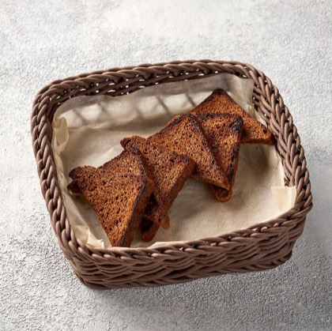
Хлеб бородинский
40 ₽Бородинский хлеб — классика русской выпечки. Насыщенный вкус и аромат этого хлеба покорят вас с первого кусочка.
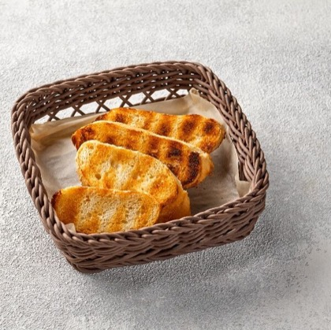
Чиабатта
80 ₽Наш хрустящий хлеб — идеальное дополнение к любому блюду
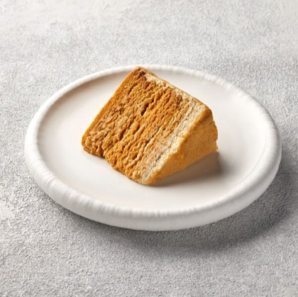
Нежный торт медовик
390 ₽Приготовлен из нежных коржей, пропитанных натуральным домашним медом, что придает ему невероятный аромат
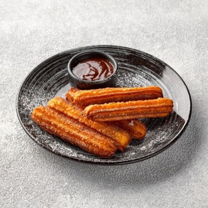
Чуррос с шоколадным соусом
280 ₽Хрустящие палочки из заварного теста в сочетании с шоколадным соусом
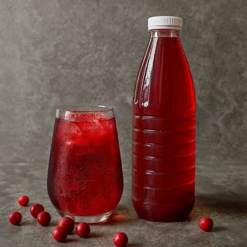
Морс из клюквы
460 ₽Освежающий напиток, который идеально утоляет жажду и радует своим ягодным вкусом. Для его приготовления используем спелые ягоды клюквы, которые придают морсу яркий цвет и насыщенный аромат
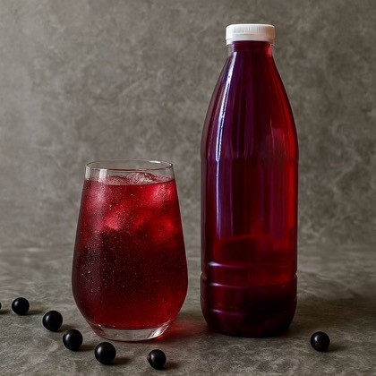
Морс из смородины
460 ₽Освежающий напиток, который идеально утоляет жажду и радует своим ягодным вкусом. Для его приготовления используем спелые ягоды смородины, которые придают морсу яркий цвет и насыщенный аромат
Меню доставки (Яндекс Еда). На месте блюда и цены могут отличаться от указанных.